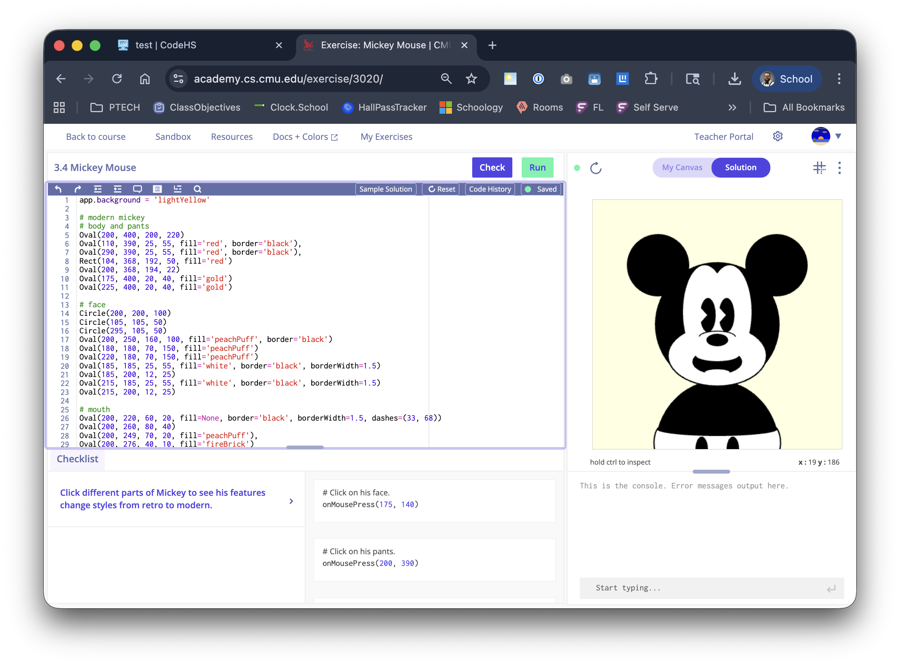
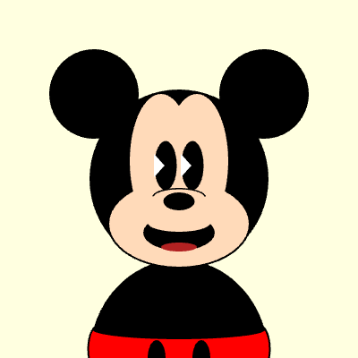
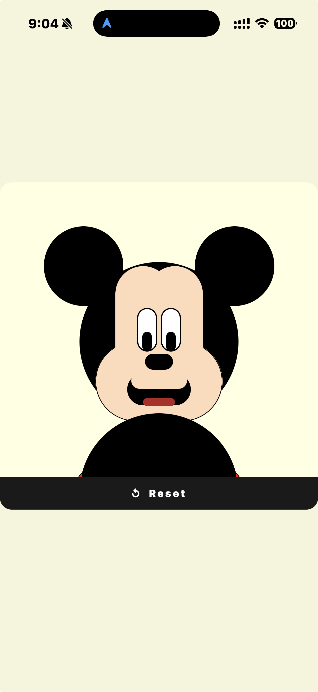
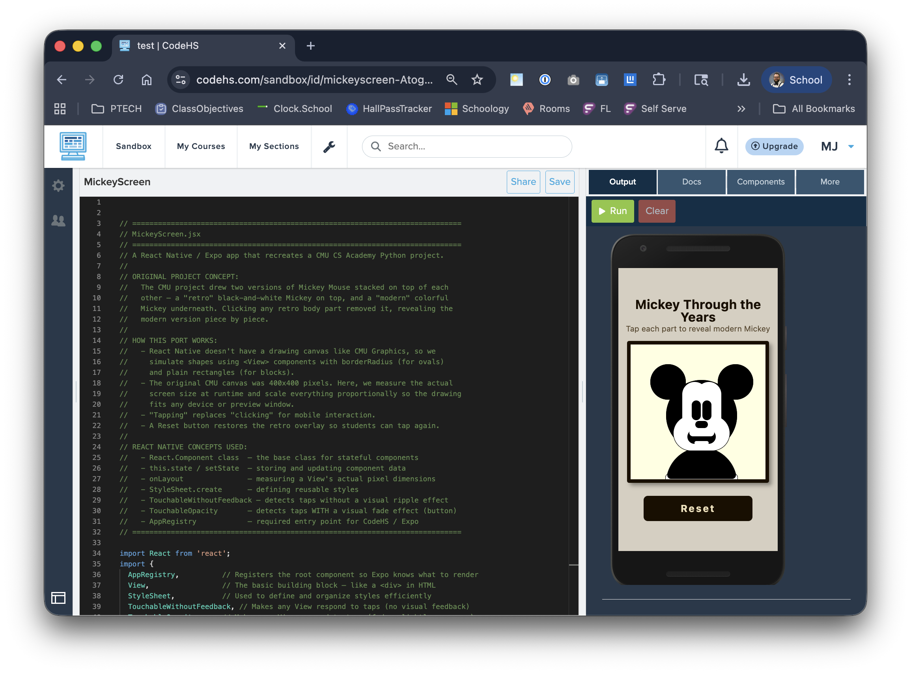
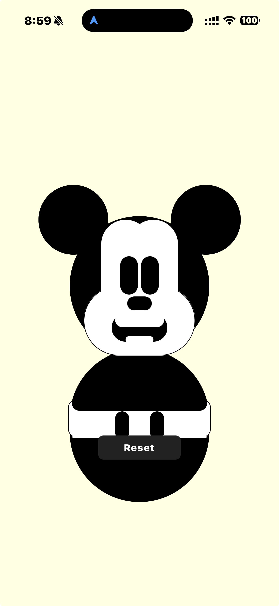
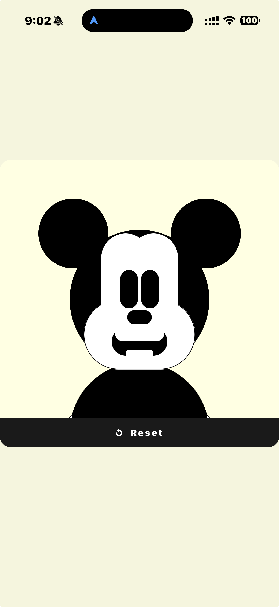

Overview
This activity was designed for a Fundamentals of Computer Science course as part of the Computing Skills for Today's Middle School and High School Classrooms Workshop. The goal was to create a classroom project that integrates two tools introduced during the training: the CMU CS Academy IDE and the CodeHS sandbox.
Students take an existing interactive Python program — one they have already written in CMU CS Academy — and refactor it into a mobile app using React Native in CodeHS. The refactoring is done collaboratively with an AI assistant, making the activity also a lesson in how to work with AI tools effectively.
The goal is not to memorize new syntax. It is to recognize that the same programming concepts — events, state, conditionals, loops — exist across every language and platform. Refactoring makes that visible in a concrete, hands-on way.
This lesson works especially well for classes that use tablets instead of laptops, since the finished app runs in the Expo Go mobile app and students can see their code on a real device.
The Original CMU Project
The example project used here is a CMU CS Academy drawing exercise called Mickey Mouse. The project draws two versions of Mickey stacked on top of each other: a retro black-and-white version on top, and a modern colorful version underneath. Clicking any retro body part removes it, revealing the modern version piece by piece.
This project is a great candidate for refactoring because it uses several foundational concepts that translate directly to mobile:
- Drawing with basic shapes (ovals, circles, rectangles)
- Grouping shapes into logical parts
- Event handling (
onMousePress) - State — which parts are visible or hidden
- Layering — drawing order determines what appears on top

The CMU CS Academy IDE — Python code on the left, interactive canvas on the right. The retro black-and-white Mickey is drawn on top of the modern colorful version.
The CMU project file included in /examples/cmu-starter.py
has the solution code redacted. The key logic
(onMousePress handler and the retroParts list)
is replaced with a stub so you can work through it before sharing with
students. The drawing setup and shape definitions are left intact.


Same concept, two platforms. The drawing logic is the same; only the framework changed.
The Tool Chain
The activity uses three tools in sequence. Students do not need to switch between environments manually — each tool has a specific role.
Students copy their finished Python code from CMU CS Academy and paste it into Claude.ai with a prompt asking it to refactor the code into a React Native mobile app for CodeHS. They then paste the generated JSX into the CodeHS sandbox, run it, and debug any errors — copying each error message back to Claude for help.
This activity works well on tablets. Students can write the original project on any device with a browser, then view the finished mobile app in the Expo Go app on their tablet using the shareable CodeHS link.
Concept Mapping: Python → React Native
The core insight of this activity is that every CMU Graphics concept has a direct equivalent in React Native. The syntax looks completely different, but the underlying idea is the same.
| CMU Graphics (Python) | React Native (JavaScript) | The Idea |
|---|---|---|
Oval(cx, cy, w, h) |
<View> with borderRadius |
Draw an oval / ellipse shape |
Rect(x, y, w, h) |
<View> (no borderRadius) |
Draw a rectangle |
Group(...) |
Component wrapping child views | Group related shapes together |
shape.clear() |
this.setState({ part: false }) |
Remove / hide a shape or group |
def onMousePress(mouseX, mouseY): |
onPress on TouchableWithoutFeedback |
Respond to a click / tap |
| Variable storing shape visibility | this.state boolean flags |
Track which parts are visible |
| Drawing order (first = bottom) | Component order (first = bottom layer) | Control layering / z-order |
| Canvas background color | backgroundColor on container View |
Set the background |
app.background = 'lightYellow' |
backgroundColor: 'lightyellow' |
Same color, different syntax |
Ask students: "Which concepts transferred directly? Which ones required a workaround? Why might a mobile app handle events differently than a desktop canvas?"
One concept that required a workaround
The CMU project uses react-native-svg — a library for drawing
mathematically precise ellipses — but that library is not available in the
CodeHS sandbox. The workaround: React Native's core <View>
component can be made oval-shaped using borderRadius. It is not
a perfect ellipse, but it is close enough for this project and requires
zero external dependencies. This is a great example of a real engineering
trade-off to discuss with students.
The AI Refactoring Process
The React Native version of this project was not written by hand. It was produced by pasting the Python code into Claude.ai and iteratively debugging the output until it ran correctly in CodeHS. The process took about 30 minutes and six rounds of error-fixing.
This is the most important thing for students to understand: AI-generated code is a starting point, not a finished product. Every round of debugging required reading an error, understanding it, and describing it clearly to the AI. That is a real and valuable skill.
CodeHS requires AppRegistry.registerComponent() to identify the root component. The initial output didn't include it.
Lesson Platform-specific requirements aren't always obvious and may need to be discovered by running the code.
The component was named MickeyScreen, but CodeHS expects the root component to be called App.
Lesson Naming conventions matter. Always check platform documentation for required identifiers.
CodeHS runs an older React environment that does not support hooks at all. The entire component had to be rewritten using ES5 class syntax with this.state and this.setState.
Lesson AI tools generate modern code. The target environment may have constraints. Understanding why an error occurs matters more than just accepting the fix.
The initial version used react-native-svg to draw shapes. That library is not available in the CodeHS sandbox. All shapes were rewritten using core <View> components.
Lesson When a dependency isn't available, look for what is available. Core platform primitives can often approximate the same result.
The CodeHS browser preview worked, but loading in the Expo app on a real device failed. The file was missing a proper module export. Both module.exports = App and module.exports.default = App were added to cover both CommonJS and ES module import styles.
Lesson Browser previews and real device environments can have different requirements. Always test in the actual deployment context.
Dimensions.get('window') reads the physical device screen size at startup — not the CodeHS preview pane size. Switching to onLayout made the app respond to whatever container it is actually rendered inside.
Lesson When building for multiple environments, measure the actual rendered container rather than assuming the screen size.
Walk through this error log with students before they start their own refactoring. Set the expectation that 5–6 rounds of debugging is normal, not a sign of failure. The skill being practiced is reading an error message and describing it clearly — not getting it right on the first try.
The full conversation log is documented in
lesson/ai-refactoring-process.md.
The Finished App
The finished React Native app recreates the CMU project interaction on mobile: tap each retro black-and-white body part to reveal the modern colorful Mickey underneath. A Reset button restores all the retro parts so students can tap through again.

The CodeHS sandbox — React Native code on the left, the finished app preview on the right. The Share button generates a link that opens in the Expo Go mobile app.


The finished app is publicly viewable at: codehs.com/sandbox/id/mickeyscreen-AtogQW — open this link in the Expo Go app on a tablet or phone to run it on a device.
What the code looks like
The complete, heavily commented React Native source is in
/examples/react-native-example.jsx. Every section includes
inline comments explaining the React Native concept being used and how it
maps back to the original CMU Graphics equivalent. It is designed to be
readable by students who have never seen JavaScript before.
// In CMU Graphics (starter — your code goes here):
def onMousePress(mouseX, mouseY):
### Solution code redacted — fill in your logic here ###
pass
// In React Native — same idea, different syntax:
App.prototype.clear = function(part) {
var u = {};
u[part] = false; // e.g. u['face'] = false
this.setState(u); // triggers a re-render with that part hidden
};
Classroom Implementation
Course: Fundamentals of Computer Science · Grade: 9–10
Explore the Original Project
Students run and analyze the CMU CS Academy project using the starter file (solution redacted). They identify:
- What variables track state
- What event triggers the interaction
- How shapes are grouped
- What draw order controls layering
Plan the Mobile Version
Before opening Claude, students sketch out how the program should behave as a mobile app:
- What UI components are needed?
- What replaces
onMousePresson a touchscreen? - What state needs to be tracked?
- How will the layout change from a square canvas to a phone screen?
Refactor with AI
Students paste their Python code into Claude.ai and prompt it to refactor for CodeHS React Native. They then:
- Paste the output into the CodeHS sandbox
- Run it and read any errors
- Copy each error back to Claude for help
- Repeat until the app runs correctly
Reflect
Students discuss or write about:
- Which concepts transferred directly? Which required a workaround?
- What did the AI get right on the first try? What did it get wrong?
- What decisions did you make that the AI could not?
Give students this as a starting point for their Claude.ai conversation:
Can you refactor this CMU CS Academy Python project into a React Native app for CodeHS? The app should run in the CodeHS sandbox using the Expo Go app. Here is the code: [paste code here]
Tell students to include the error message verbatim when debugging. "It didn't work" is not enough — "Here is the exact error:" is.
Learning Objectives
Recognize how programming concepts translate across languages and platforms
Practice debugging and iterative development in a real environment
Build and run a basic mobile application interface
Collaborate effectively with an AI coding assistant
Reflect on how design decisions change across platforms
Communicate technical problems clearly and precisely
Resources & Files
-
CMU Python starter file (redacted) —
/examples/cmu-starter.py
The original project with solution code stubbed out for teacher use. -
Finished React Native app —
/examples/react-native-example.jsx
Fully commented JSX, ready to paste into the CodeHS sandbox. -
AI collaboration log —
/lesson/ai-refactoring-process.md
A walk-through of every error encountered during the refactoring, with lessons drawn from each one. - Live CodeHS demo — codehs.com/sandbox/id/mickeyscreen-AtogQW
- CMU CS Academy — academy.cs.cmu.edu
- Claude.ai — claude.ai
- CodeHS — codehs.com